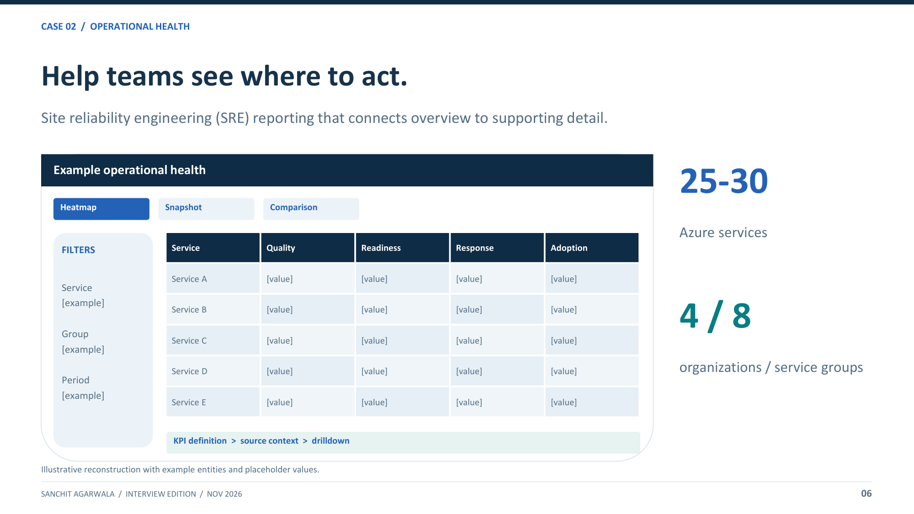
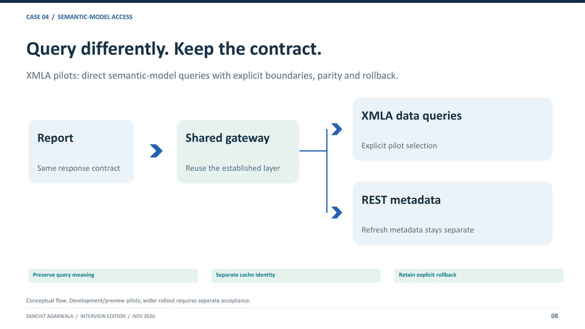
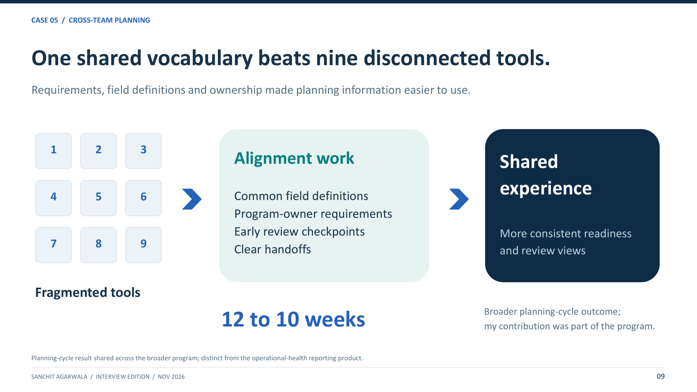
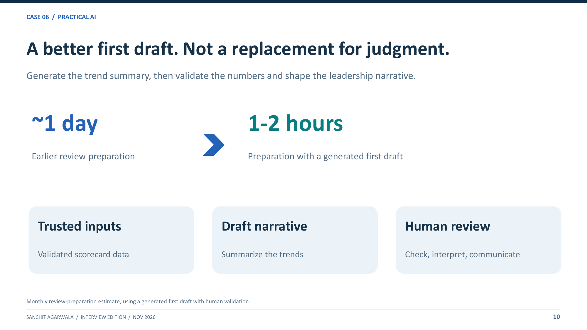

I start with the decision
Before I build anything, I ask two questions: what decision will this number help someone make, and who will act on that decision?
Technical Program Manager · Software Engineer
I turn scattered reliability data into numbers leadership trusts. At Microsoft I decide what gets measured, align the teams that own the data, and build the platforms people use to make decisions.
What should we measure, and which decision will it support?
What does the number mean, and who owns it?
Can people trust the result, and what happens when it's wrong?
If you bring me a reporting problem, a cross-team program or a data question, this is how I'll approach it.
Before I build anything, I ask two questions: what decision will this number help someone make, and who will act on that decision?
When stakeholders need different things, I put their requirements side by side and design for all of them, so conflicts surface early instead of becoming rework later.
I test a small version with real users before scaling it up, and I say clearly what isn't ready yet.
Every dashboard, pipeline and definition gets an owner, documentation and monitoring, so it doesn't depend on me.
I'm candid about gaps. I'm strongest in Azure, data and program work, and I'm building depth in AWS and compliance frameworks.
Examples are generalized to protect confidential details. Figures come from my own records and internal reviews.

I own the executive reliability scorecard: 12+ KPIs used in senior leadership reviews. I align six or more partner teams on definitions, validation and targets, and I maintain the pipelines and models behind it.

Several queries produced the same output but were tracked differently. I aligned stakeholders on one definition and packaged it as a shared function. Anyone can read the logic, but only the owner can change it, so copies can't drift.

I built and launched operational health reporting for roughly 25–30 Azure services, used by four organizations across eight service groups. Users start with a heatmap, move to a snapshot or comparison, then drill into the definition behind each KPI.

A refresh shouldn't turn a trusted dashboard into a "no data" screen. I designed the refresh so the last validated result stays visible while new data loads and is checked. The new result appears only after validation, failures are shown openly, and a cold start with no valid data shows an honest unavailable state.

I led the reporting-side work to move a reliability scorecard from Power BI to a unified web platform built with React and C#. The move also included the XMLA migration, which connects the platform to the underlying data models, and I helped set up the infrastructure with the platform team. The rollout was phased: users were onboarded in stages, only one process wrote data while a shared cache served results, each dataset was checked for completeness before publishing, and alerts were set up. Before go-live, the work passed UI, technical leadership, privacy and threat-model reviews.

Planning data was split across fragmented tools with unclear field definitions. I gathered requirements from program owners, aligned definitions and ownership, added pre-alignment checkpoints, and consolidated nine tools into one experience. The broader program's planning cycle moved from 12 to 10 weeks. That outcome was shared, and my contribution was part of it.

I generate first-draft trend summaries and AI-generated insights for leadership, and a person checks every number and narrative before release. When production narratives timed out, I traced the cause to model calls running while the user waited on the page. I moved generation off the request path and cached each narrative per data snapshot.
I moved my products to access-package-only membership (access granted through approved bundles) and enforced backend access on sensitive reports. I fixed dependency vulnerabilities flagged by scans, and replaced stored access tokens with managed identity (services that sign in without stored secrets) and role-based access. I use Privileged Identity Management (PIM), a tool that grants elevated access only for a set time and after approval.
I was the only escalation point for a scorecard the team relied on. Before the retirement date, I wrote a handover guide, ran office hours, recorded a walkthrough, and handed operations to 17 owners across program and pillar teams. The team reports about 80% less routine maintenance, a result I contributed to.

I owned mobile feature planning and release criteria for consumer shopping apps serving millions of users. I used funnel analysis and A/B testing to set priorities, and led validation and rollback checks across five commerce products. The launch of a faster delivery option was a team outcome.
I author reusable Copilot skills: structured, reviewable workflows that gather context, use approved tools and data, do the arithmetic in code and leave the final call to a person.
I designed a reliability check-in skill for monthly reviews. It gathers context first, retrieves data through approved connection paths (MCP and SDK, the standard ways for AI tools to reach data), calculates metric comparisons in code, and drafts a narrative where every claim links to its source. A reviewer approves each draft before use.

I developed workflows with environment-aware, scoped evidence retrieval and bounded Python collectors for investigations.
I introduced Copilot-assisted workflows for code review, data analysis and document drafting, cutting manual preparation in recurring work. Owners check the output before they use it.
I explored Copilot Studio for agent use cases. The work stayed exploratory and didn't become a deployed agent.
How I design these: the agent proposes and a person decides. Numbers come from code, not generated text, every claim has a source, and nothing goes out unreviewed.
Azure cloud reliability intelligence. I own the executive reliability scorecard, its pipelines and its access model.
Cross-org reporting strategy and delivery for Azure reliability, including the planning-tool consolidation and cross-team incident coordination.
Program management office reporting: Power BI models and dashboards for quarterly executive reviews, data freshness and security requirements.
Defined success metrics and a Power BI dashboard for a mission-critical customer-resiliency program. Received a full-time return offer.
Requirements and decision logs for a service-management application, and a phone migration across 20+ university units.
Business intelligence and analytics; information assurance. Graduate teaching assistant for data communications and strategic communication.
Owned mobile feature planning and release criteria for the JioMart Express launch, which gave shoppers a 2–3 hour grocery delivery option instead of 2–3 days. Assistant Manager (Jan–Dec 2021): led validation for five commerce products, coordinating defect reviews, end-to-end testing and rollback checks across a network of more than 100 colleagues.
Designed 50+ data models for SCADA and PLCC operational data, and SQL queries to find anomalies in industrial monitoring datasets.
Member of the Microsoft Aspire Leadership Council (2024–2026), where I plan and host sessions for early-career talent, mentor interns and new hires, and help interns move into full-time roles.
Rotaract Club of Mumbai (Jul 2017 – May 2021): Vice President in 2019–20, leading a team of 15 and mentoring 10 directors. Earlier, I served as Director of Community Services and Director of Professional Development (2018–19). I helped run Talent Fiesta and Challenging Challenges, disability inclusion programs, and X-pressions, which reached 4,000+ children.
Academic and personal projects from my graduate and undergraduate work, with my published research.
Led a 10-month consulting engagement for Rotary: a plan for clubs to partner with local businesses, built on stakeholder interviews with club presidents and business leaders.
Engineered features from 900+ unstructured restaurant reviews, built neural network and KNN models to forecast churn, and visualized seasonal retention trends in R.
Gathered requirements and designed a relational system for a football association's research and performance data, then built a full-stack .NET and Oracle application for retrieval and reporting.
Analyzed NYC 311 service data in Excel and Tableau, and proposed a redesigned 311 architecture for Tucson, including non-emergency call types that could move off the 911 line.
Analyzed voice, SMS and internet usage across large telecom datasets, clustered customers for tailored retention offers, and predicted churn for high-value customers.
Designed the data architecture for a company database, from E-R diagrams to a normalized relational schema, with SQL queries that also support NoSQL-style data.
Designed a smart locker with multi-factor authentication (FPGA and RFID) and IoT alerts. Published the research on SSRN (Elsevier): computer vision and a Raspberry Pi flag unauthorized users within 14 seconds and send image alerts for remote approval or denial.
The fastest way to reach me is LinkedIn. I'm happy to talk about technical program management, reliability reporting, data platforms or applied AI.